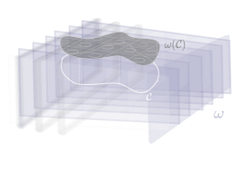
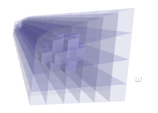

Differential forms are what you're actually integrating everytime you use an integral (i.e. every integrand you've ever written). They're geometrically interpretable as oriented areas, of a dimension equal to the order of the form. They are the dual to well behaved vector fields on manifolds. Equivalently, they're the restriction on the tensor product space of some vector space to only antisymmetric components.
Two basic ingredients of differential forms are the concept of the wedge product and of the exterior derivative. The wedge product is something like a generalization of the cross product from \(\mathbb{R}^3\) to arbitray dimension; it is antisymmetric and can form higher order blades. The exterior derivative is a way to make higher order forms from forms of one order lower.
As an explicit example, we now consider differential forms of three dimensional real space, with an emphasis on geometrical intuition (perhaps at explicit loss of rigor and depth). First we consider 0-forms.
In three dimensions, the exterior derivative's relevance to physics is easily seen. In conjunction with the relevant Hodge Star operator (here the unique 3-form \( dx\wedge dy\wedge dz \)), the gradient, the curl, the divergence, and the Laplacian are all aptly generalized by the exterior derivative.
In \(\mathbb{R}^3\), 0-forms or forms of degree zero are just real-valued three dimensional functions.
In three dimensions, 1-forms may be though of intuitively as oriented planes spaced throughout \(\mathbb{R}^3\) in some fashion dependant on functions of the three spatial coordinates.
The gradient of traditional vector calculus is generalized by the exterior derivative. Gradients are effectively all exact 1-forms, but instead of unit vectors being associated with the relevant partial derivative, unit 1-forms are associated with the relevant partial derivatives.
In three dimensions, 2-forms may be though of intuitively as oriented areas spaced throughout \(\mathbb{R}^3 \) in some continuous differentiable fashion. 
In three dimensions, 3-forms may be though of intuitively as volumes. 